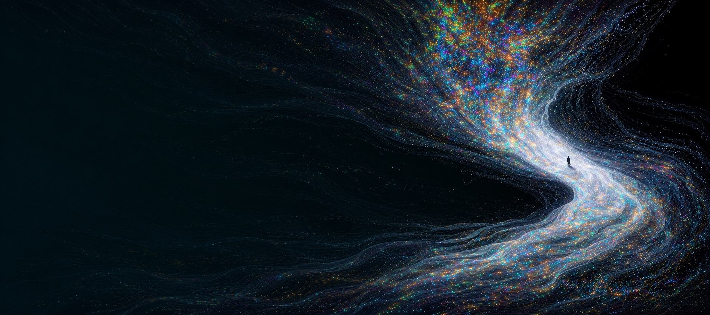
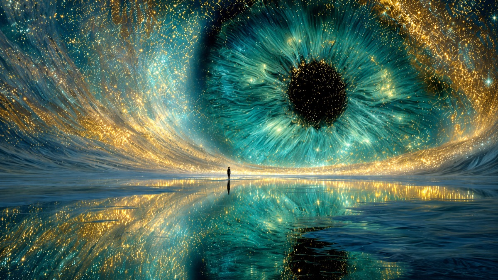

VISION & EXPLORATION
潼眼看 · 影像与内外探索
以电影美学记录国内外的自然、文明与生命经验，展开对宇宙、意识与灵魂的持续追问。
走入影像视野 潼眼看TongGaze
潼眼看TongGaze
水、光、风、火、雷、金、土、木与以太，构成潼眼看的系列坐标。
认识品牌系列潼眼看，是以星际视野展开的灵性探索与公益共创品牌。我们关心意识的边界、灵魂的来处，以及生命如何在有限的此生，回应无限的宇宙。
从电影美学的视觉纪录，到声音与能量的体验共建；从现实中的相聚，到数字空间的多维创作——让感知获得形态，让相遇产生共振，让内在之光走向创造与服务。
阅读品牌理念向内，探索灵魂的深度。
向外，延展生命的维度。

影像赋予感知形态，疗愈连接内在探索，
相聚凝聚共同愿景，数字世界延展创作边界。
以电影美学记录国内外的自然、文明与生命经验，展开对宇宙、意识与灵魂的持续追问。
走入影像视野深度链接国内外资深疗愈实践者，共同探索项目、品牌与产品的协同生长。
了解共建方向以线下相遇连接星际种子与光之工作者，让专业、资源与精神愿景汇聚为现实中的协作。
探索主题相聚以灵性世界为主题的网络游戏创作蓝图，面向灵性与艺术疗愈创作者，探索另一种共同创造的方式。
预见未来世界我们面向认同星际种子与光之工作者精神、兼具深度思辨与现实创造力的高净值探索者。
他们追问生命的意义与灵魂的归途，关注地外生命、AI与前沿科技，也愿意把已有的知识、资源与影响力，投入更广阔的创造和服务。
在这里，共同的语言是对未知的敬意，以及将内在探索付诸行动的意愿。
当目光抵达星河之外，
生命将如何重新理解自身？
以声音为舟，以晶石与植物为媒介。让来自不同领域的探索者，在一夜的沉浸与静观中相遇。